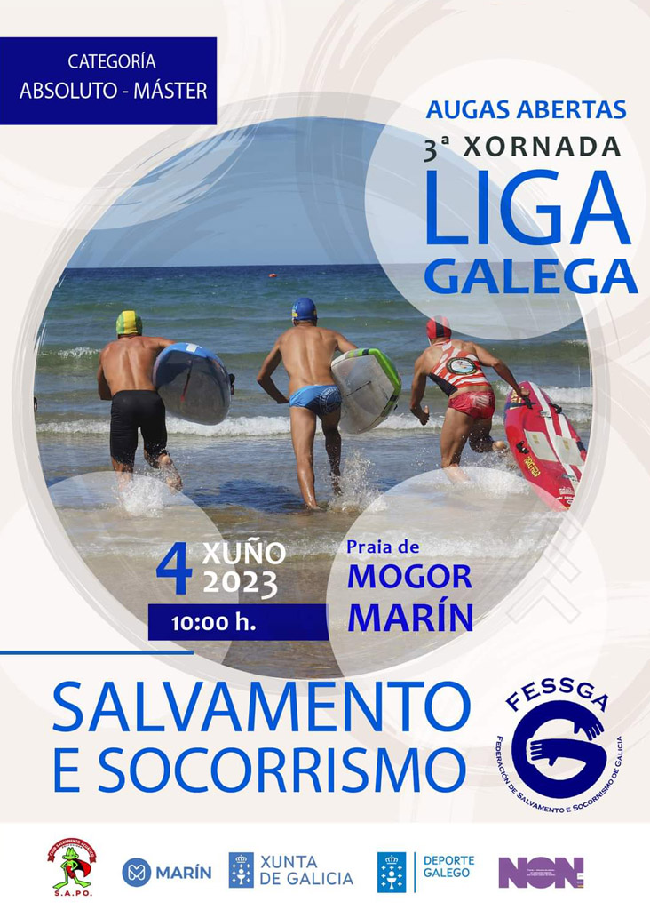
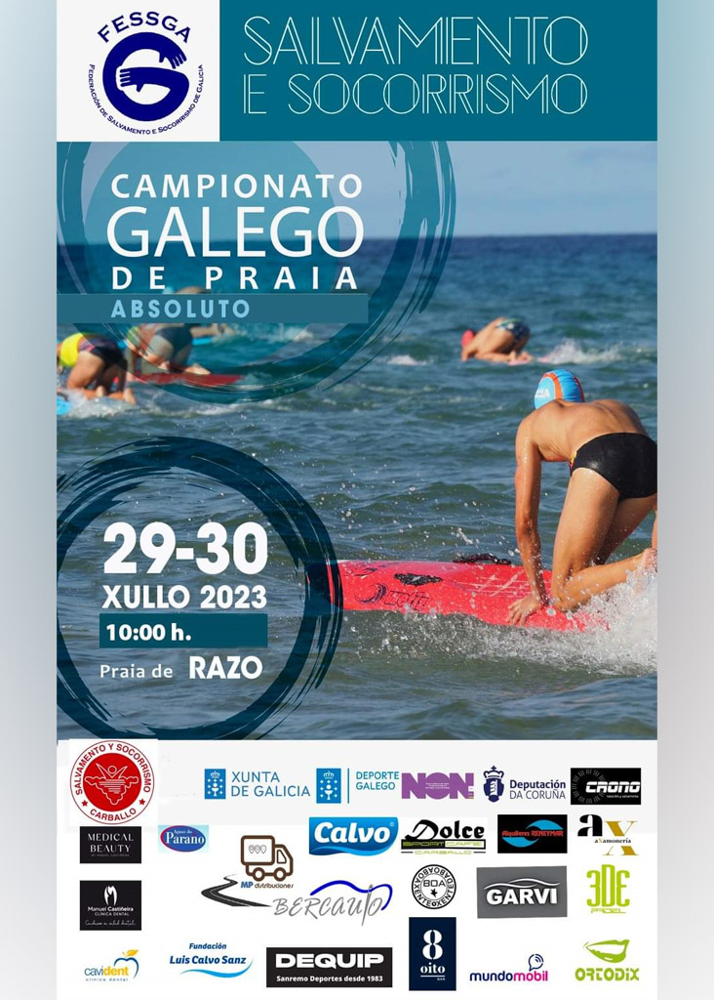
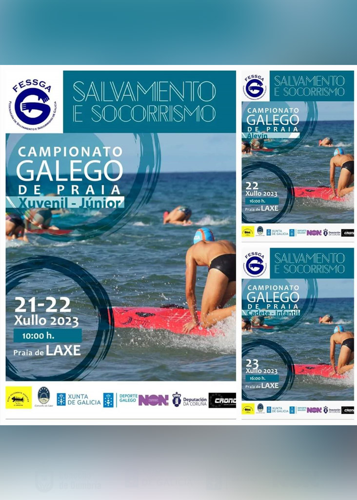
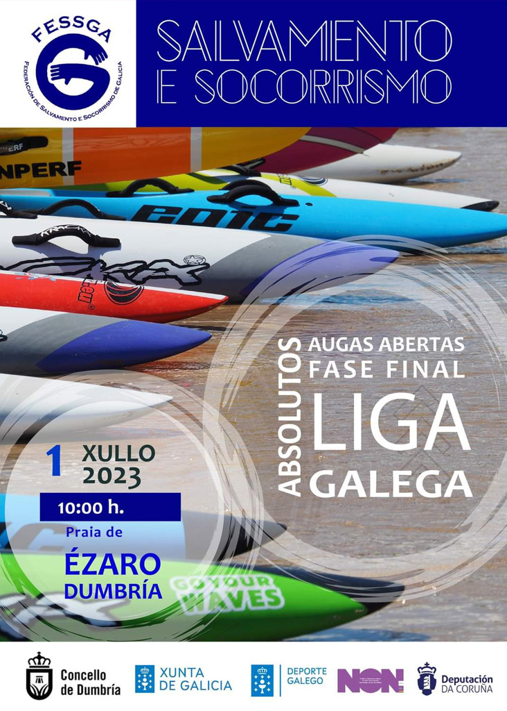
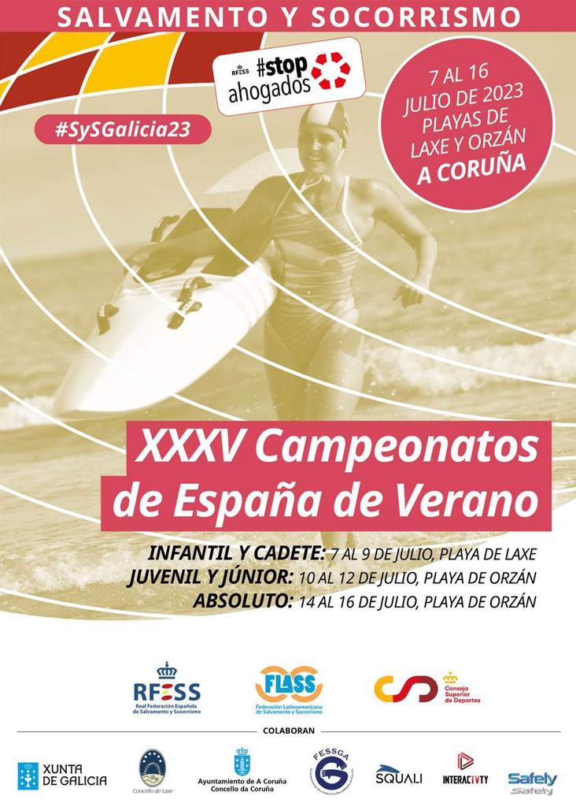

3ª Xornada Liga Galega – Augas Abertas – Absoluto, Máster – 4 Xuño Marín

Campionato Galego de Praia, praia de Laxe

Campionato galego de praia absoluto – 29-30 xullo, Praia de Razo

Liga Galega – Augas Abertas Fase Final Absolutos – 1 Xullo
3ª Xornada Liga Galega – Augas Abertas – Absoluto, Máster – 4 Xuño Marín

XXXV Campeonatos de España de Verano